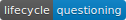

| all_equal {dplyr} | R Documentation |

all_equal() allows you to compare data frames, optionally ignoring
row and column names. It is questioning as of dplyr 1.0.0, because it
seems to solve a problem that no longer seems that important.
all_equal( target, current, ignore_col_order = TRUE, ignore_row_order = TRUE, convert = FALSE, ... )
target, current |
Two data frames to compare. |
ignore_col_order |
Should order of columns be ignored? |
ignore_row_order |
Should order of rows be ignored? |
convert |
Should similar classes be converted? Currently this will convert factor to character and integer to double. |
... |
Ignored. Needed for compatibility with |
TRUE if equal, otherwise a character vector describing
the reasons why they're not equal. Use isTRUE() if using the
result in an if expression.
scramble <- function(x) x[sample(nrow(x)), sample(ncol(x))]
# By default, ordering of rows and columns ignored
all_equal(mtcars, scramble(mtcars))
# But those can be overriden if desired
all_equal(mtcars, scramble(mtcars), ignore_col_order = FALSE)
all_equal(mtcars, scramble(mtcars), ignore_row_order = FALSE)
# By default all_equal is sensitive to variable differences
df1 <- data.frame(x = "a", stringsAsFactors = FALSE)
df2 <- data.frame(x = factor("a"))
all_equal(df1, df2)
# But you can request dplyr convert similar types
all_equal(df1, df2, convert = TRUE)